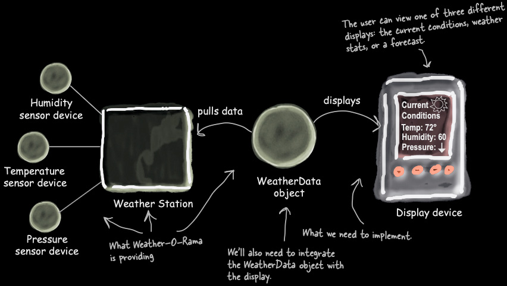
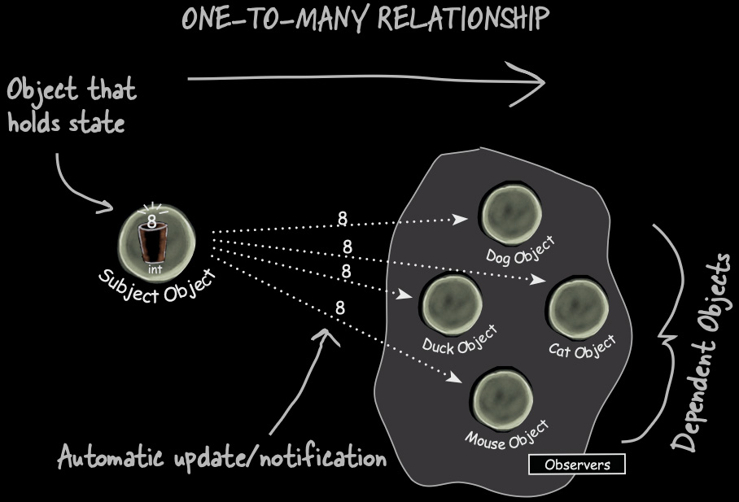
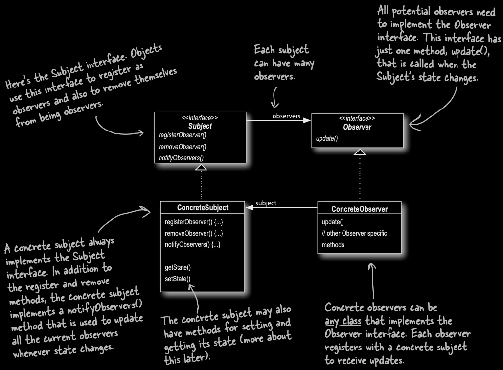

Weather-O-Rama has a WeatherData object that receives live measurements: temperature, humidity, air pressure.
They want multiple displays (current conditions panel, statistics view, forecast) to update automatically whenever measurements change.
Weather Monitoring Application

Weather-O-Rama app. (Source: Eric Freeman and Elisabeth Robson, Head First Design Patterns, O'Reilly Media).
Conceptual diagram of the Weather-O-Rama system architecture. On the left, three sensor devices, labeled Humidity sensor device, Temperature sensor device, and Pressure sensor device, feed data into a Weather Station, annotated as What Weather-O-Rama is providing. The Weather Station pulls data into a WeatherData object, annotated with Well also need to integrate the WeatherData object with the display and What we need to implement. The WeatherData object then sends data to a Display device via a displays arrow. The display device shows a Current Conditions screen with example values: Temp 72°, Humidity 60, and Pressure with a down arrow. A handwritten annotation at the top right reads: The user can view one of three different displays: the current conditions, weather stats, or a forecast.
WeatherData references concrete display classes directly. It cannot be compiled without them.
Any structural change to a display class (a renamed method, a moved package) breaks WeatherData without touching it.
Violation 2
Open/Closed Principle broken
measurementsChanged() must be modified every time a display is added or removed.
The class is not closed for modification. Every new feature is an edit to working, tested code.
Violation 2
No runtime extensibility
There is no way to add or remove a display while the program is running.
All three displays are instantiated at construction time and fixed.
Turning off ForecastDisplay at 10 PM would require a null-check hack or a full recompile.
Violation 4
Failure to encapsulate what varies
The set of displays is exactly the thing that changes most often; product teams add and remove them constantly.
It is not encapsulated at all; it's hardwired into the method body.
Observer Rundown: What We Need
The Observer pattern exists precisely for this situation:
Some object has data of interest to others
Others need to react when that data changes
No tight coupling between the data-holder and the reactors
Multiple reactors supported without changing the data-holder
Reactors can register and deregister at runtime
The Newspaper Analogy
Pattern Role
Newspaper World
Subject (aka Observable)
Publisher
Observer (aka Subscriber)
Subscriber
registerObserver()
Subscribe
removeObserver()
Cancel subscription
notifyObservers()
Deliver the paper to all subscribers
Formal Definition
The Observer Pattern defines a one-to-many dependency between objects so that when one object changes state, all of its dependents are notified and updated automatically.
One-to-many: One Subject, potentially many Observers.
Dependency: Observers depend on the Subject for their data, but the Subject does not depend on any specific Observer type.
Automatically: Observers do not poll. The Subject pushes the notification.
One-to-many

Observer pattern one-to-many diagram. (Source: Eric Freeman and Elisabeth Robson, Head First Design Patterns, O'Reilly Media).
Conceptual diagram titled ONE-TO-MANY RELATIONSHIP illustrating the Observer design pattern. On the left, a single Subject Object, labeled Object that holds state, contains an integer field with the value 8. Four dashed arrows labeled with the value 8 extend from the Subject Object to the right, each pointing to a separate observer object grouped together labeled Observers and collectively labeled Dependent Objects. The four observer objects are: Dog Object (upper left of the group), Cat Object (upper right), Duck Object (center left), and Mouse Object (bottom center). An annotation at the bottom left reads: Automatic update/notification.
Redesign
Without writing any code yet, how would you redesign measurementsChanged() so that WeatherData doesn't know the name of a single display class?
The Subject Lifecycle
Subject holds data of interest and maintains a collection of registered Observer objects
A new object calls registerObserver() → added to the collection
Subject data changes → Subject calls notifyObservers()
notifyObservers() loops over the collection and calls update() on each Observer
An object calls removeObserver() → removed from collection; no further notifications
Observer Design Pattern

Observer pattern UML. (Source: Eric Freeman and Elisabeth Robson, Head First Design Patterns, O'Reilly Media).
UML class diagram showing the Observer design pattern structure with four classes and several annotations. At the top left, an interface named Subject (with label interface) declares three methods: registerObserver(), removeObserver(), and notifyObservers(). A handwritten annotation reads: Heres the Subject interface. Objects use this interface to register as observers and also to remove themselves from being observers. At the top right, an interface named Observer (with label interface) declares one method: update(). A handwritten annotation reads: All potential observers need to implement the Observer interface. This interface has just one method, update(), that is called when the Subjects state changes. A solid line with an open diamond labeled observers connects the Subject interface to the Observer interface along with a handwritten annotation, indicating that each Subject can have many observers. Below, two concrete classes appear. ConcreteSubject implements the Subject interface via a dashed line with an open triangle arrowhead pointing up to Subject. ConcreteSubject declares registerObserver(), removeObserver(), notifyObservers(), getState(), and setState(). A handwritten annotation reads: A concrete subject always implements the Subject interface. In addition to the register and remove methods, the concrete subject implements a notifyObservers() method that is used to update all the current observers whenever state changes. A second annotation reads: The concrete subject may also have methods for setting and getting its state (more about this later). ConcreteObserver implements the Observer interface via a dashed line with an open triangle arrowhead pointing up to Observer. ConcreteObserver declares: update() and a note indicating other Observer-specific methods. A solid line labeled subject connects ConcreteObserver back to ConcreteSubject. A handwritten annotation reads: Concrete observers can be any class that implements the Observer interface. Each observer registers with a concrete subject to receive updates.
WeatherData + Observer
import java.util.ArrayList;
import java.util.List;
public class WeatherData implements Subject {
private final List observers = new ArrayList<>();
private float temperature;
private float humidity;
private float pressure;
@Override
public void notifyObserver(Observer o) {
observers.add(o);
}
@Override
public void removeObserver(Observer o) {
observers.remove(o);
}
@Override
public void notifyObservers() {
for (Observer o : observers) {
o.update(); // Subject calls update(); Observer decides what to fetch
}
}
public void measurementsChanged() {
notifyObservers(); // replaces the three hardwired calls
}
// State accessors — available for pull model
public float getTemperature() { return temperature; }
public float getHumidity() { return humidity; }
public float getPressure() { return pressure; }
public void setMeasurements(float temperature, float humidity, float pressure) {
this.temperature = temperature;
this.humidity = humidity;
this.pressure = pressure;
measurementsChanged();
}
}
Design Principle 4: Minimize Dependencies
Strive for loosely coupled designs between objects that interact.
Design Principle 4: Minimize Dependencies
What this means in Observer:
Subject knows only that observers have an update() method
A new Observer type can be added without touching Subject code
Observers can come and go at runtime without the Subject caring
Subject and observer hierarchies are independently changeable and independently reusable
SOLID Connections
Open/Closed Principle: WeatherData is open for extension (add displays) without modification
Dependency Inversion: Both sides depend on abstractions (Subject, Observer interfaces), neither depends on the other's concrete class